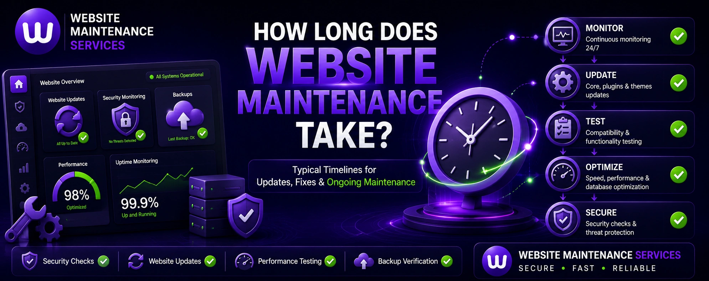
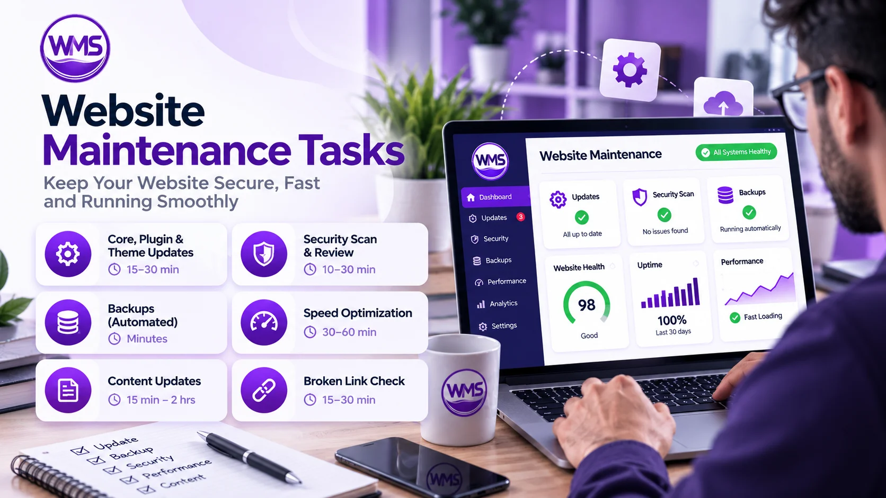
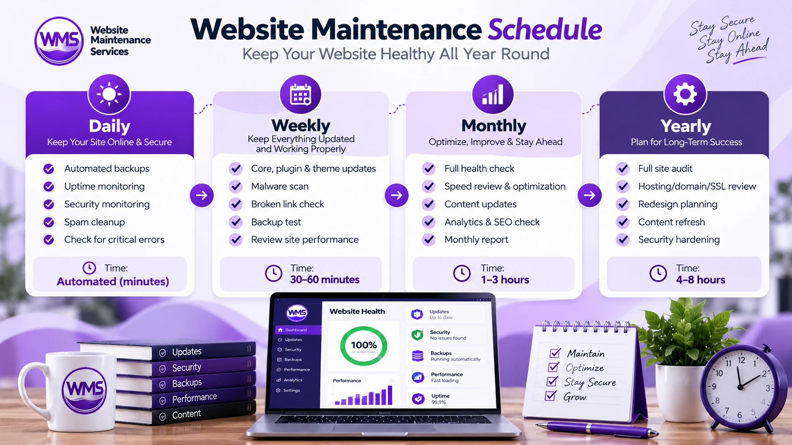
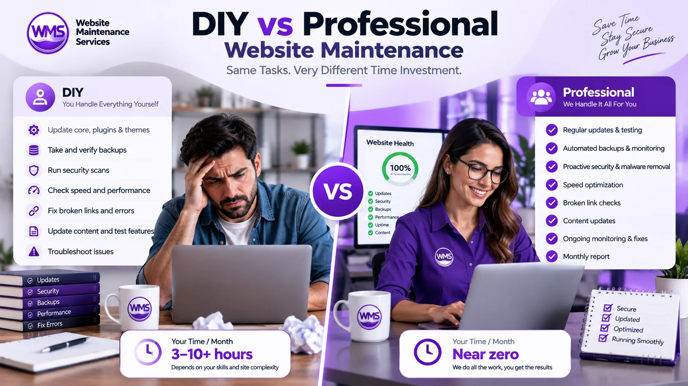

How Long Does Website Maintenance Take in 2026
On this page
How Long Each Maintenance Task TakesHow Much Time Per Month by Site TypeWebsite Maintenance Schedule: Daily, Weekly, Monthly & YearlyHow Long Does WordPress Website Maintenance Take?How Long Does It Take for a Website Update to Go Live?What Does Website Maintenance Actually Mean?How Long Is a Scheduled Maintenance Window?What Affects How Long Maintenance TakesDIY vs Professional: Time ComparisonFrequently Asked Questions
2026 Time Guide
Whether you do it yourself or hire a team, here is exactly how long website maintenance takes — per task, per month, and per site type — plus how long scheduled maintenance windows and downtime really last.


How Long Each Maintenance Task Takes
Here is the realistic time each common website maintenance task takes per cycle.
| Maintenance Task | Typical Time | How Often |
|---|---|---|
| Core, plugin & theme updates | 15–30 min | Weekly / monthly |
| Backups (automated) | Minutes (auto) | Daily / weekly |
| Security scan & review | 10–30 min | Continuous / weekly |
| Uptime monitoring | Automated 24/7 | Always on |
| Broken link & 404 check | 15–30 min | Weekly |
| Speed optimization (ongoing) | 30–60 min | Monthly |
| Speed optimization (initial) | 1–3 hrs | One-time |
| Content / small edits | 15 min – 2 hrs | As needed |
| Full monthly health check & report | 1–2 hrs | Monthly |
| Initial setup / onboarding | 2–4 hrs | One-time |
How Much Time Per Month by Site Type
Total monthly maintenance time depends on how big and complex your website is.
| Website Type | Maintenance Time / Month | Notes |
|---|---|---|
| Small site / portfolio / blog | 1–2 hours | Mostly updates, backups & security |
| Business / service website | 2–5 hours | Adds content edits & SEO checks |
| WooCommerce / online store | 5–10 hours | Checkout, apps & inventory testing |
| Large / high-traffic / enterprise | 10–15+ hours | Performance, security & dev work |
Not sure where your site fits? Match these to our maintenance packages — each plan covers the time your site actually needs.

Website Maintenance Schedule: Daily, Weekly, Monthly & Yearly
Ongoing website maintenance works best on a regular schedule. Spreading tasks across daily, weekly, monthly, and yearly cycles keeps each session short and your site consistently healthy — instead of one slow, costly yearly catch-up.
| Frequency | Typical Tasks | Time |
|---|---|---|
| Daily | Automated backups, uptime & security monitoring, spam cleanup | Automated (minutes) |
| Weekly | Core, plugin & theme updates, malware scan, broken-link check, backup test | 30–60 min |
| Monthly | Full health check, speed review, content updates, analytics & SEO check, report | 1–3 hours |
| Quarterly | Deeper performance audit, plugin cleanup, UX review, security hardening | 2–4 hours |
| Yearly | Full site audit, hosting/domain/SSL review, redesign & content refresh planning | 4–8 hours |
Want this handled on a set schedule? See the full maintenance checklist or our monthly maintenance packages.
How Long Does WordPress Website Maintenance Take?
WordPress sites follow the same rhythm as any other website, but the time depends on how many plugins and custom features are installed. For a typical WordPress business site, routine maintenance takes about 1–3 hours per month — roughly 15–30 minutes for core, plugin, and theme updates, plus automated backups and security scanning.
Sites with many plugins, a page builder, or WooCommerce need extra testing after each update, which can push monthly time to 5–10+ hours. Because WordPress updates are frequent, running them in small, regular sessions — ideally on a staging copy first — keeps each one fast and low-risk. You can hand this off with a WordPress maintenance plan.
How Long Does It Take for a Website Update to Go Live?
A content update — editing text, swapping an image, or publishing a new page — usually goes live instantly the moment you save or publish it. If your site uses caching or a CDN, visitors may keep seeing the old version for a few minutes until the cache refreshes.
Bigger changes take longer to fully propagate. A domain or DNS change can take a few hours (occasionally up to 24–48 hours), and a brand-new page can take days to weeks to appear in Google — because that depends on search crawling and indexing, not your website. In short: the update itself is fast; being found in search is a separate, slower process.
What Does Website Maintenance Actually Mean?
Website maintenance is the ongoing work of keeping a website secure, updated, fast, and fully functional. It covers software updates, security monitoring, backups, speed optimization, uptime checks, broken-link fixes, and content updates. Most of these are quick, recurring tasks — which is why routine maintenance only adds up to a few hours a month.
When a site shows a “scheduled maintenance” message, it usually means the team is applying updates or changes that briefly require the site to be paused. With modern tools and a staging environment, these windows are short — often just minutes — and frequently invisible to visitors.
How Long Is a Scheduled Maintenance Window?
Most maintenance happens with little or no downtime. Here is what to expect.
Routine updates
Near-zero downtime. Tested on staging, then pushed live in seconds.
Scheduled changes
Typically a few minutes to under an hour, usually during off-peak times.
Major work / fixes
Larger rebuilds or recovery can take 1–4 hours, but are planned in advance.
What Affects How Long Maintenance Takes
Plugins & complexity
More plugins, custom code, and integrations mean more to test and update.
Site type
Stores and membership sites need checkout and feature testing, adding time.
How often you maintain
Frequent, small sessions are far faster than rare, catch-up overhauls.
Automation & tools
Automated backups, monitoring, and staging cut hands-on time dramatically.
Skill & experience
Experts finish in minutes what can take a beginner hours of troubleshooting.
Current site health
A neglected site needs more upfront cleanup before routine upkeep is quick.

DIY vs Professional: Time Comparison
The same maintenance takes very different amounts of your time depending on who does it.
| Approach | Your Time / Month | Best For |
|---|---|---|
| DIY | 3–10+ hours | Technical owners with time to spare |
| Freelancer | ~1 hour (coordination) | Small sites, occasional needs |
| Managed plan | Near zero | Businesses that want it fully handled |
The fastest option for you is a managed plan — we absorb all the hours so you get the result without the time cost. See how our process works or the full maintenance checklist.
View All Plans, Packages & Costs Monthly Maintenance Packages
Want to skip the hours entirely?
Get a free website audit — we’ll tell you exactly how much maintenance time your site needs and handle all of it for you. No obligation.
See the Websites We Keep Running
We save business owners hundreds of hours a year. Browse real examples of the sites we maintain, secure, and optimize.
Frequently Asked Questions
Common questions about how long website maintenance takes.
How long does website maintenance take?
Routine website maintenance takes about 1 to 3 hours per month for a typical small business website. Individual tasks like plugin updates take 15–30 minutes, a full monthly health check takes 1–2 hours, and larger or ecommerce sites can need 5–15+ hours a month.
How much time does it take to maintain a website?
Maintaining a website takes a few hours a month for most sites: 1–2 hours for a small site, 2–5 hours for a business site, and more for stores or high-traffic sites. With a managed plan, that time cost shifts entirely to your provider, so it takes essentially none of your time.
How long does scheduled maintenance take on a website?
A scheduled maintenance window is usually a few minutes to under an hour, typically run during off-peak times. With a staging site, most updates are tested first and pushed live in seconds, so visitors often experience no downtime at all.
What does site maintenance mean?
Site maintenance means the ongoing work of keeping a website secure, updated, fast, and functional — including software updates, security monitoring, backups, speed optimization, and fixing errors. A "scheduled maintenance" message means the site is briefly paused while that work is applied.
How often should website maintenance be done?
Core tasks like updates, security scans, and backups should run weekly (or daily for stores), with a full health check and report monthly. A consistent schedule keeps each session short; skipping maintenance leads to longer, costlier catch-up work later.
Does website maintenance cause downtime?
Rarely. Most routine maintenance causes no visible downtime because updates are tested on a staging copy first. Only major changes need a short planned window, which we schedule during low-traffic hours to minimize impact.
How often should you update your website?
Check core software, plugins, and security weekly (or daily for online stores), run a full health check and content review monthly, and do a deeper audit each quarter. A consistent schedule keeps every session short and prevents costly catch-up work later.
How long does a website update take to go live?
A saved content edit is usually live instantly, though caching or a CDN can delay what visitors see by a few minutes. DNS or domain changes can take a few hours, and appearing in Google search results can take days to weeks, since that depends on indexing rather than your site.
How long does WordPress maintenance take?
A typical WordPress business site needs about 1–3 hours of maintenance per month for updates, backups, and security. Sites with many plugins, a page builder, or WooCommerce need more testing and can require 5–10+ hours a month.
Related Guides & Packages
Website Maintenance Cost2026 pricing guide Website Maintenance ChecklistEvery task, step by step Our Maintenance ProcessHow we keep sites running WordPress Maintenance PackagesPlans & pricing Website Management PackagesFully managed plans Best Maintenance CompaniesCompare top providers
Get Your Time Back — We’ll Handle Maintenance
Stop spending hours every month on updates, security, and fixes. Our team manages it all so you can focus on running your business.
Get a Free Quote Get a Free Audit
share on